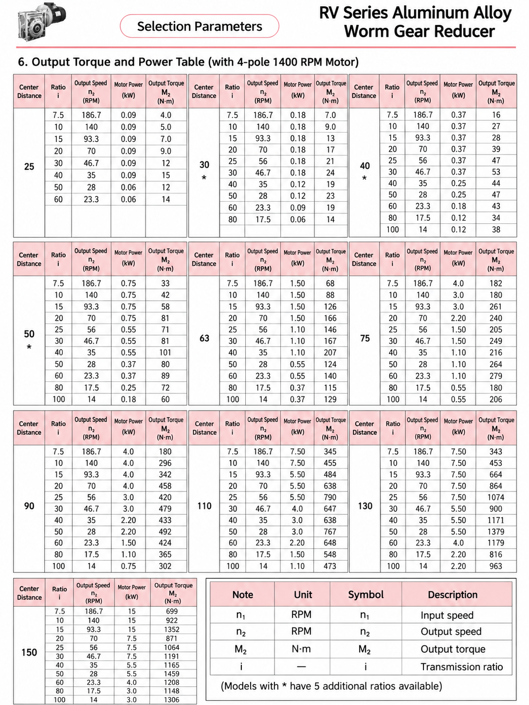

RV Worm Gearbox Motor Power Reference
The table below summarizes the motor-power options appearing in the supplied chart. It is not a blanket rating for every ratio: a given frame can allow a different motor power at a different reduction ratio.
| Gearbox model | Motor-power options shown in chart |
|---|---|
| RV25 | 0.06, 0.09 kW |
| RV30 | 0.06, 0.09, 0.12, 0.18 kW |
| RV40 | 0.12, 0.18, 0.25, 0.37 kW |
| RV50 | 0.18, 0.25, 0.37, 0.55, 0.75 kW |
| RV63 | 0.37, 0.55, 1.1, 1.5 kW |
| RV75 | 0.55, 1.1, 1.5, 2.2, 3.0, 4.0 kW |
| RV90 | 0.75, 1.1, 1.5, 2.2, 3.0, 4.0 kW |
| RV110 | 1.1, 1.5, 2.2, 3.0, 4.0, 5.5, 7.5 kW |
| RV130 | 2.2, 4.0, 5.5, 7.5 kW |
| RV150 | 3.0, 4.0, 5.5, 7.5, 15 kW |
What the Reference Condition Means
The output-speed figures shown are calculated from a 1400 rpm motor. For example, a 20:1 ratio gives a theoretical output speed of about 70 rpm, while a 50:1 ratio gives about 28 rpm. Actual operating speed changes with the motor's rated speed, slip and load. Use the gearbox ratio and torque calculator for a preliminary check, then confirm the selected assembly with SMK.
Examples from the Supplied Chart
RV25: compact applications
RV25 is shown with 0.06 kW and 0.09 kW motors. At the stated condition, the chart lists ratios from 7.5:1 to 60:1 and output torque values from 4 to 15 N·m. For dimensions, input shaft and mounting-hole checks, see the dedicated RV25 gearbox dimensions guide.
RV50 and RV63: medium compact drives
The RV50 chart includes 0.18–0.75 kW motor options, while RV63 includes 0.37–1.5 kW. One chart example for RV50 is 0.75 kW at 20:1, with a listed output speed of 70 rpm and output torque of 81 N·m. A separate RV50 selection guide explains ratio, speed and application checks in more detail.
RV90 to RV150: larger frames
RV90 is shown with 0.75–4.0 kW options, RV110 with 1.1–7.5 kW, RV130 with 2.2–7.5 kW and RV150 with 3.0–15 kW. The supplied chart lists 15 kW for RV150 only at 7.5:1, 10:1 and 15:1. Do not apply that motor power to another RV150 ratio without checking the ratio-specific data and duty.
Why Motor Power Changes with Gear Ratio
Permissible motor power is ratio-dependent because output torque, efficiency and heat generation change across the range. The supplied RV50 entries illustrate the point: 0.75 kW is listed at 10:1, 0.55 kW at 40:1, 0.37 kW at 60:1 and 0.18 kW at 100:1. Frame size alone is therefore not enough to select a motor.
What to Send for Motor and Gearbox Selection
- Machine application and load type
- Motor voltage, frequency, power and rated speed
- Required output speed or reduction ratio
- Required running and peak output torque
- Operating hours, starts, shock load and ambient conditions
- Mounting position, output bore or shaft, and motor flange requirements
For a complete frame-size comparison, review the RV25–RV150 NMRV gearbox size guide. If you are comparing right-angle technologies for continuous duty, read the worm versus hypoid gearbox comparison.
Frequently Asked Questions
What motor power is suitable for an RV25 worm gearbox?
In the supplied 1400 rpm chart, RV25 is paired with 0.06 kW or 0.09 kW motors, depending on the ratio. Confirm the actual configuration and duty before selection.
Can an RV50 worm gearbox use a 0.75 kW motor?
The supplied chart lists 0.75 kW for RV50 at 7.5:1, 10:1, 15:1 and 20:1. The final selection must check the actual ratio and operating conditions.
Can an RV150 worm gearbox use a 15 kW motor?
The supplied chart lists 15 kW for RV150 at 7.5:1, 10:1 and 15:1. It is not a general rating for every RV150 ratio.
Why does motor power change with ratio?
Ratio affects output torque, efficiency and heat generation. Select from ratio-specific data rather than from frame size alone.